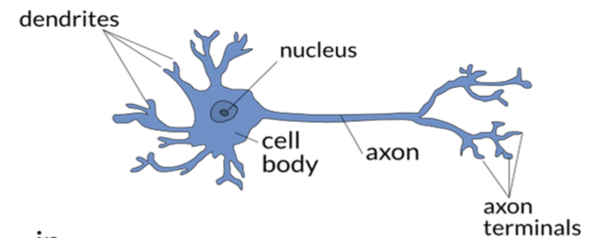

What are Artificial Neural Networks?#
Artificial neural networks (ANN) are powerful classification models that are able to capture complex non-linear relationships between the independent and dependent variables.They are well-known and widely accepted in different uses, such as vision, speech, and language processing. In these domains, they have consistently demonstrated superior performance compared to other classification models and, in some instances, have even surpassed human capabilities.
How were they born?#
Throughout history, the exploration of artificial neural networks has been fueled by the ambition to replicate the intricacies of biological neural systems. The human brain, comprised of approximately 100 billion interconnected neurons communicating through axons and dendrites, forms a complex network essential for our ability to learn new tasks and perform daily activities.
Each neuron performs a fundamental modular function, responding to nerve activations and transmitting them. However, it is the combination of these basic functions that allows for the expression of complex behaviors. This foundational concept serves as the cornerstone for constructing artificial neural networks.

Image credit: https://dreams.news/articles/reti-neurali-artificiali-quando-l-it-si-ispira-al-cervello-biologico-parte-1
An additional critical aspect is the strength of the connection point, known as a synapse, between a dendrite and an axon, determining neuronal connectivity. Neuroscientists have observed that the human brain learns by modifying the synaptic connection strength between neurons through repeated stimulation from the same impulse. This dynamic process further underscores the remarkable nature of the architecture within the human brain’s neural network.
How are they structured?#
An artificial neural network mirrors the complex organization of the human brain, consisting of processing units called nodes. These nodes, equivalent to neurons, act as the fundamental computation units. The connections between nodes, represented by directed links, resemble the interneuronal connections found in biological systems and are composed of axons and dendrites.
The weight assigned to a directed link signifies the strength of the synaptic connection between neurons. Just as in biological neural systems, the core aim of an Artificial Neural Network (ANN) lies in adapting these weights. The network undergoes a learning process, adjusting the weights of the links until they align with the input-output relationships inherent in the underlying data. This iterative adaptation mirrors the learning mechanisms observed in biological neural systems, contributing to the network’s ability to discern patterns and relationships within complex datasets.
References#
Tan, P.-N., Steinbach, M., & Kumar, V. (Year). Introduction to Data Mining (2nd ed.). Publisher.